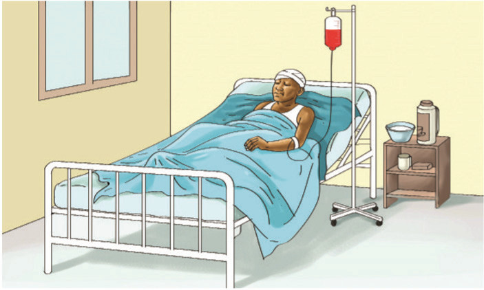

Kielelezo namba 1 kinaonesha vifaa vyenye ncha kali kama sindano ya hospitali, sindano ya kushonea nguo, na mkasi. Vilevile inaonyesha mswaki. Kuchangia vifaa vyenye ncha kali na mtu mwenye VVU kunaweza kusababisha maambukizi.
Vifaa vyenye ncha kali vitumike kwa uangalifu na usahihi. Vilevile, kuchangia mswaki na mtu mwenye VVU kunaweza kusababisha maambukizi ya VVU. Unashauriwa usichangie vifaa hivi katika matumizi ili kuepuka maambukizi ya VVU.
(b) Kuongezewa damu yenye VVU
Chunguza Kielelezo namba 2, kisha soma maelezo yanayofuata.

Kielelezo namba 2 kinaonesha mgonjwa aliyelazwa hospitalini akiwa ametundikiwa chupa ya damu. Damu ni lazima ipimwe kwa umakini ili kuhakikisha haina vimelea vya VVU. Mgonjwa anapaswa kuongezewa damu safi na salama.
(c) Maambukizi kutoka kwa mama kwenda kwa mtoto
Mtoto anaweza kupata VVU kutoka kwa mama aliyeambukizwa VVU wakati wa kujifungua. Vilevile, mtoto anaweza kupata VVU kutoka kwa mama wakati wa kunyonya.